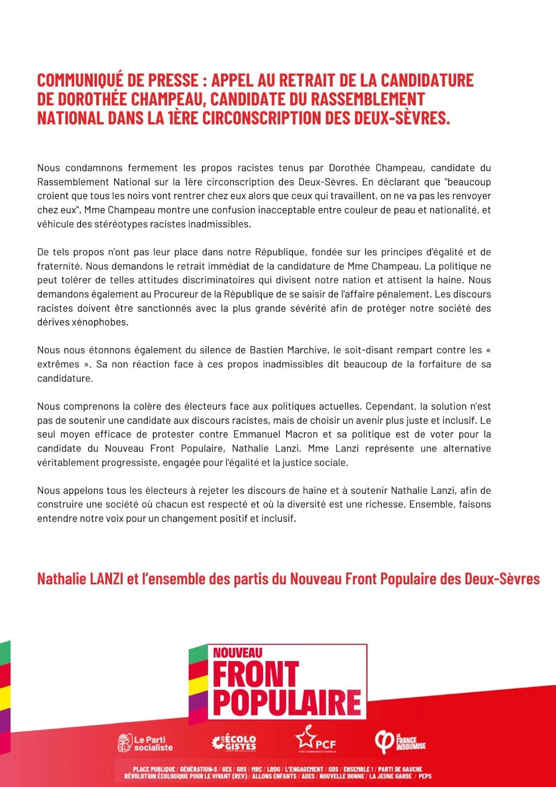

Communiqué relayé
Première circonscription. Nathalie Lanzi et les partis du NFP demandent le retrait de Dorothée Champeau
Date indiquée par Facebook · 2 juillet 2024
Repères éditoriaux
Nous avons relayé le communiqué signé par Nathalie Lanzi et les partis du Nouveau Front populaire des Deux-Sèvres. Les signataires demandent le retrait de la candidature de Dorothée Champeau et appellent le procureur à se saisir de l’affaire qu’ils dénoncent dans leur texte.

Sources
Archive rouge · document diffusé sur Facebook · AR-0002-FB-01334
À lire aussi · Face au budget d’austérité, le PCF propose un pacte d’avenir